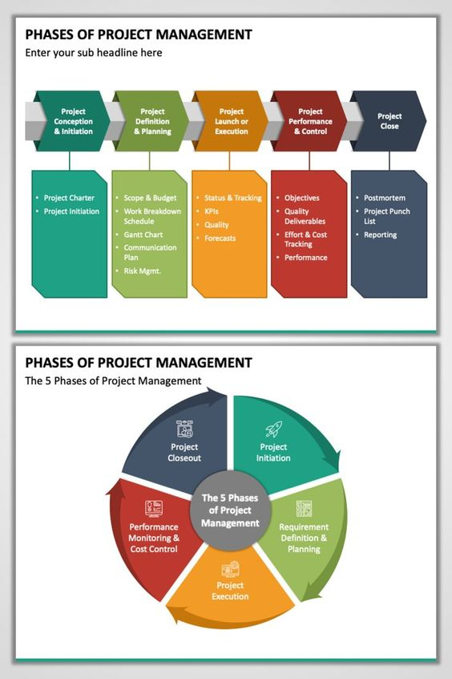
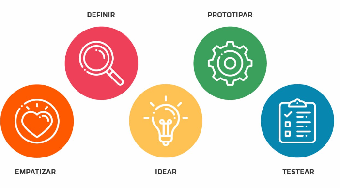

Problemas y Proyectos
Estadística Básica
Pontificia Universidad Javeriana Cali
2023
Para el planteamiento de proyectos desde la detección de problemas, hay varias metodologías y enfoques que se pueden emplear. A continuación, se presentan algunas de las metodologías más conocidas:
Ciclo PHVA (Planificar, Hacer, Verificar, Actuar):
Como se mencionó anteriormente, el ciclo PHVA es un enfoque efectivo para abordar problemas y proyectos. Comienza identificando el problema en la etapa “Planificar”, desarrollando un plan de acción, implementándolo en la etapa “Hacer”, verificando los resultados y actuando en consecuencia para mejorar. Luego, se repite el ciclo para la mejora continua.

| Ventajas | Desventajas |
|---|---|
| Enfoque a mejora continua: Promueve un enfoque constante en la mejora de procesos y productos. Al seguir este ciclo, las organizaciones pueden identificar áreas de mejora y realizar ajustes de manera periódica. | Requiere tiempo y recursos: La implementación de la metodología puede requerir tiempo y recursos considerables, especialmente en organizaciones que están empezando a aplicarla. |
| Enfoque sistemático: Es un proceso sistemático que se adapta bien a la gestión de la calidad. Ayuda a las organizaciones a abordar problemas de manera estructurada y a tomar decisiones basadas en datos. | No es una solución rápida: Es un enfoque a largo plazo que no proporciona soluciones rápidas. Puede llevar tiempo antes de ver resultados significativos. |
| Orientación a la prevención: Se centra en prevenir problemas en lugar de corregirlos después de que hayan ocurrido. Esto puede reducir los costos y aumentar la eficiencia. | Resistencia al cambio: Algunas personas pueden resistirse al cambio, y su implementación a menudo implica cambios en la cultura organizativa y en los procesos de trabajo existentes. |
| Flexibilidad: El ciclo se puede aplicar a una amplia variedad de procesos y sistemas, desde la producción y la fabricación hasta la gestión de proyectos y la prestación de servicios. | Necesidad de formación: Para implementarlo de manera efectiva, las organizaciones y los empleados deben adquirir habilidades en la recopilación y análisis de datos, así como en la toma de decisiones basadas en datos. |
| Toma de decisiones informadas: La fase de Verificar implica la recopilación y análisis de datos, lo que permite tomar decisiones informadas y basadas en evidencia. | Complejidad: Aunque es un enfoque valioso, puede resultar complejo, especialmente en organizaciones grandes o en proyectos grandes. La gestión y la documentación adecuadas son fundamentales. |
Six Sigma:
Six Sigma es un enfoque de mejora de procesos que se enfoca en reducir la variabilidad y mejorar la calidad. Se utiliza DMAIC (Definir, Medir, Analizar, Mejorar, Controlar) como una metodología estructurada para abordar problemas y proyectos. Comienza con la definición del problema, la medición de los datos, el análisis de las causas raíz, la implementación de mejoras y el control continuo del proceso. Fué desarrollado por Bill Smith, en 1986.

| Ventajas | Desventajas |
|---|---|
| Mejora de la calidad: Seis Sigma se centra en la reducción de defectos y la mejora de la calidad de los productos o servicios, lo que conduce a la satisfacción del cliente y a una mayor lealtad de los clientes. | Requiere recursos y tiempo: La implementación de Seis Sigma puede requerir una inversión significativa en formación, personal y herramientas, lo que puede ser costoso y llevar tiempo. |
| Enfoque basado en datos: La metodología Seis Sigma se basa en la recopilación y análisis de datos, lo que permite tomar decisiones informadas y objetivas. | Enfoque en proyectos aislados: En algunas organizaciones, Seis Sigma se utiliza en proyectos aislados en lugar de una estrategia integral, lo que limita su impacto general. |
| Reducción de costos: Al eliminar defectos y reducir la variabilidad en los procesos, Seis Sigma puede llevar a una reducción de costos significativa, ya que se evitan gastos relacionados con retrabajos, devoluciones y pérdida de clientes. | Complejo: La metodología Seis Sigma puede resultar compleja, especialmente para organizaciones pequeñas o en sectores no manufactureros. La comprensión y la aplicación de las herramientas pueden ser desafiantes. |
| Aumento de la eficiencia: La metodología Seis Sigma ayuda a identificar y eliminar actividades innecesarias o ineficientes en los procesos, lo que aumenta la eficiencia operativa. | Enfoque enfocado en la mejora cuantitativa: Seis Sigma se enfoca en la reducción de defectos cuantitativos, lo que puede no ser adecuado para todos los tipos de organizaciones o problemas que requieren enfoques cualitativos. |
| Enfoque estructurado: Seis Sigma proporciona un marco de trabajo estructurado con herramientas y técnicas definidas para abordar problemas, lo que facilita la gestión de proyectos y la toma de decisiones. | Resistencia al cambio: Algunos empleados y líderes pueden resistirse al cambio que implica Seis Sigma, ya que puede alterar la forma en que se realizan las tareas cotidianas. |
| Enfoque en el cliente: Seis Sigma tiene un fuerte enfoque en la satisfacción del cliente, lo que ayuda a alinear los objetivos de la organización con las necesidades y expectativas de los clientes. |
Design Thinking:
Design Thinking es una metodología centrada en el usuario que se utiliza para abordar problemas complejos y fomentar la innovación. Se inicia con la empatía hacia los usuarios, la definición del problema, la generación de ideas, la creación de prototipos y pruebas, y la implementación de soluciones.
Esta métodolgía puede ayudar en generación de proyectos de innovación, en la mejora de experiencia del cliente y desarrollo de nuevos productos o servicios, Design Thinking puede ser una excelente elección para entender las necesidades y deseos de los clientes y a diseñar soluciones centradas en el usuario.
Fue creado por Herbert Simon en 1969, popularizado por David Kelley en la década de los noventa.

| Ventajas | Desventajas |
|---|---|
| Enfoque centrado en el usuario: El Design Thinking se centra en comprender profundamente las necesidades, deseos y perspectivas de los usuarios, lo que puede llevar a soluciones más efectivas y satisfactorias. | Tiempo y recursos: El proceso de Design Thinking puede ser intensivo en tiempo y recursos, especialmente cuando se realiza de manera exhaustiva. Puede requerir la inversión de tiempo significativo en investigación y prototipado. |
| Creatividad e innovación: El Design Thinking fomenta la creatividad y la generación de ideas innovadoras al fomentar la colaboración interdisciplinaria y la exploración de múltiples soluciones. | Falta de estructura: A diferencia de otros enfoques más estructurados, como Seis Sigma, el Design Thinking puede parecer menos prescriptivo y puede resultar confuso para algunas personas que prefieren una guía más rígida. |
| Flexibilidad: Es un enfoque flexible y adaptable que se puede aplicar a una amplia variedad de problemas y contextos, desde el diseño de productos hasta la mejora de procesos y servicios. | Riesgo de sobrevaloración de la creatividad: En ocasiones, el Design Thinking puede dar lugar a soluciones creativas pero impracticables o poco realistas si no se equilibra adecuadamente con la viabilidad técnica y económica. |
| Enfoque iterativo: Design Thinking utiliza un proceso iterativo que permite probar y refinar soluciones a medida que se desarrollan, lo que reduce el riesgo de fracaso y mejora la calidad de las soluciones. | Resistencia al cambio: En algunas organizaciones, puede haber resistencia al cambio hacia un enfoque más centrado en el usuario y creativo, especialmente en entornos más tradicionales. |
| Empatía y comprensión: El Design Thinking fomenta una profunda empatía con los usuarios y una comprensión de sus necesidades reales, lo que ayuda a evitar soluciones basadas en suposiciones. | Resultados no garantizados: El Design Thinking no garantiza el éxito en todos los casos. Aunque es una herramienta valiosa para la innovación, no siempre conduce a soluciones efectivas o rentables. |
Lean Startup:
El enfoque Lean Startup se centra en la creación rápida de prototipos y pruebas de hipótesis para desarrollar un proyecto o producto. Esta metodología fué creado por Eric Ries en 2011. Se inicia con la identificación de un problema, la creación de un producto mínimo viable (MVP), la medición de resultados y el aprendizaje continuo. Este enfoque es especialmente adecuado para proyectos empresariales y startups.
En caso que la entidad tenga como propósito el desarrollar nuevos productos financieros o servicios, Lean Startup es una metodología efectiva. Ayuda a validar rápidamente las ideas y a crear MVPs (Mínimos Productos Viables) para probar en el mercado antes de invertir en el desarrollo completo.

| Ventajas | Desventajas |
|---|---|
| Minimización de riesgos financieros: Lean Startup aboga por la creación de un “mínimo producto viable” (MVP) para probar ideas en el mercado antes de invertir grandes cantidades de tiempo y dinero en el desarrollo completo de un producto. Esto ayuda a minimizar los riesgos financieros. | Requiere habilidades y recursos: La implementación exitosa de Lean Startup requiere habilidades en recopilación y análisis de datos, así como recursos para llevar a cabo experimentos y crear MVPs. |
| Aprendizaje continuo: La metodología fomenta la experimentación constante y la recopilación de datos reales del mercado, lo que permite a las empresas aprender rápidamente y ajustar su enfoque según los resultados. | Enfoque limitado: Lean Startup es especialmente efectivo en entornos donde el producto o servicio se puede probar fácilmente, pero puede no ser adecuado para proyectos altamente tecnológicos o de largo plazo. |
| Enfoque en el cliente: Lean Startup pone un énfasis significativo en entender las necesidades del cliente y en la creación de productos o servicios que resuelvan problemas reales. Esto puede mejorar la satisfacción del cliente y la retención. | Exceso de confianza en los datos: En ocasiones, las empresas pueden confiar en exceso en los datos recopilados sin considerar otros factores importantes, como el mercado, la competencia y la viabilidad técnica. |
| Flexibilidad y adaptabilidad: La metodología permite a las empresas pivotar (realizar cambios fundamentales en su enfoque) si los datos indican que su idea inicial no es viable. Esto evita la continuación de un enfoque fallido. | Presión para resultados a corto plazo: La metodología puede poner una presión indebida en la obtención de resultados a corto plazo, lo que puede llevar a decisiones apresuradas o a la omisión de consideraciones a largo plazo. |
| Eficiencia en el desarrollo: Al evitar el desarrollo completo de un producto antes de obtener retroalimentación del mercado, Lean Startup puede llevar a un uso más eficiente de los recursos y reducir el tiempo necesario para llevar un producto al mercado. | Necesidad de un cambio cultural: La implementación exitosa de Lean Startup puede requerir un cambio cultural en una organización para abrazar la experimentación y la adaptabilidad, lo cual puede ser un desafío en entornos más tradicionales. |
Project Management Institute (PMI):
El PMI proporciona un marco de trabajo completo para la gestión de proyectos, que incluye la identificación del problema (iniciación del proyecto), la planificación, la ejecución, el monitoreo y control, y el cierre del proyecto. Este enfoque es ampliamente utilizado en la gestión de proyectos en diversas industrias.

| Ventajas | Desventajas |
|---|---|
| Estándares reconocidos internacionalmente: Las prácticas y estándares de PMI son ampliamente reconocidos y aceptados a nivel global. Esto facilita la comunicación y la colaboración en proyectos internacionales. | Rigidez en la aplicación: El enfoque de PMI puede parecer rígido y burocrático en proyectos más pequeños o ágiles, lo que puede resultar en un exceso de documentación y procesos innecesarios. |
| Enfoque estructurado: PMI proporciona un enfoque estructurado y detallado para la gestión de proyectos, lo que puede ser especialmente útil en proyectos complejos y de gran envergadura. | Costos asociados: Obtener certificaciones de PMI y utilizar el marco PMBOK puede ser costoso, tanto en términos de tiempo como de dinero. |
| Mejora la eficiencia y eficacia: El uso de las mejores prácticas de PMI puede ayudar a mejorar la eficiencia y la eficacia en la gestión de proyectos al proporcionar una guía detallada para la planificación, ejecución y control de proyectos. | Complejidad: Para proyectos pequeños y sencillos, la aplicación de todas las prácticas y procesos de PMI puede ser innecesariamente compleja y sobrecargar al equipo de proyecto. |
| Profesionalización: PMI ofrece certificaciones profesionales, como la certificación PMP (Project Management Professional), que ayudan a los profesionales de la gestión de proyectos a demostrar su experiencia y conocimientos. | Falta de adaptabilidad: PMI puede no ser adecuado para todos los tipos de proyectos, especialmente aquellos que requieren un enfoque más ágil y adaptativo. |
| Red de profesionales: PMI cuenta con una amplia red de miembros y profesionales de la gestión de proyectos que pueden brindar apoyo, compartir experiencias y mejores prácticas. | Énfasis en la documentación: El enfoque de PMI a menudo pone un énfasis significativo en la documentación, lo que puede aumentar la carga administrativa en la gestión de proyectos. |
Metodología Canvas:
El Modelo Canvas, tambien llamada “Business Model Canvas” es una herramienta que permite definir, visualizar y comunicar aspectos clave de un proyecto o negocio. Ayuda a identificar problemas y oportunidades al enfocarse en segmentos de clientes, propuesta de valor, canales, relaciones con clientes, fuentes de ingresos, recursos clave, actividades clave, socios clave y estructura de costos.
El enfoque que elijas dependerá de la naturaleza del problema, el tipo de proyecto y tus objetivos específicos. Es importante seleccionar la metodología que mejor se adapte a tu situación y asegurarte de seguir un proceso estructurado para abordar los problemas y proyectos de manera efectiva.
Pueden ayudar a identificar las fuentes de ingresos, los segmentos de clientes y las actividades clave necesarias para que un proyecto sea exitoso.
| Ventajas | Desventajas |
|---|---|
| Visión holística: El Business Model Canvas proporciona una vista holística y visual de un modelo de negocio en una sola página, lo que facilita la comunicación y la comprensión de todas las partes interesadas. | Superficialidad: Aunque proporciona una visión general, el Business Model Canvas a menudo no profundiza lo suficiente en detalles específicos que pueden ser críticos para el éxito de un negocio. |
| Flexibilidad: Es flexible y se puede utilizar en una amplia variedad de industrias y contextos para diseñar o revisar modelos de negocios. | Limitaciones en la validación: No proporciona un enfoque sistemático para validar la viabilidad de un modelo de negocio, lo que significa que se requiere una investigación adicional. |
| Enfoque en el valor: Permite a las empresas centrarse en la propuesta de valor para el cliente y cómo se generará ingresos. | |
| Colaborativo: Es una herramienta efectiva para la colaboración en equipo y puede ayudar a alinear a los miembros del equipo en torno a un enfoque común. |
Design Thinking

Design Thinking es una metodología de resolución de problemas centrada en el usuario que se utiliza para abordar desafíos complejos y fomentar la innovación. Esta metodología se originó en el ámbito del diseño de productos, pero se ha expandido a otros campos, incluyendo el diseño de servicios, la gestión empresarial y la resolución de problemas en general. Design Thinking se caracteriza por su enfoque en la empatía, la colaboración y la experimentación.
Las etapas fundamentales del proceso de Design Thinking son las siguientes: Empatizar, Definir, Idear, Prototipar, Testear.
| Ventajas | Desventajas |
|---|---|
| Fomenta la creatividad e innovación: Al desafiar las normas y el status quo, el pensamiento disidente puede generar nuevas ideas y soluciones a problemas complejos. | Puede ser incómodo y desafiante: Cuestionar las normas puede generar conflicto y oposición. |
| Mejora la toma de decisiones: Al considerar diferentes perspectivas, se pueden evitar errores y tomar decisiones más informadas. | Puede generar riesgos: En algunos casos, expresar opiniones disidentes puede tener consecuencias negativas para la persona que lo hace. |
| Promueve la diversidad e inclusión: El pensamiento disidente da voz a las minorías y grupos marginados, lo que puede conducir a una sociedad más justa y equitativa. | Requiere esfuerzo y dedicación: El pensamiento disidente no es fácil; exige analizar críticamente la información y pensar fuera de esquemas. |
| Fortalece la democracia: El pensamiento disidente es esencial para un debate público sano y para desafiar a los líderes cuando sea necesario. | Puede ser malinterpretado: Las ideas disidentes pueden ser vistas como radicales o amenazantes por quienes no están acostumbrados a ellas. |
| Aumenta la resiliencia: Al ser más adaptable y abierto al cambio, las personas que practican el pensamiento disidente pueden afrontar mejor los desafíos y la incertidumbre. | Puede ser marginalizado: Las personas que piensan diferente pueden ser excluidas o ignoradas por la mayoría. |